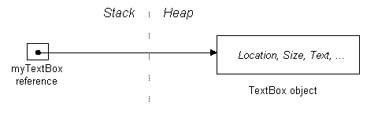
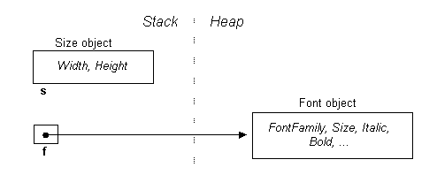
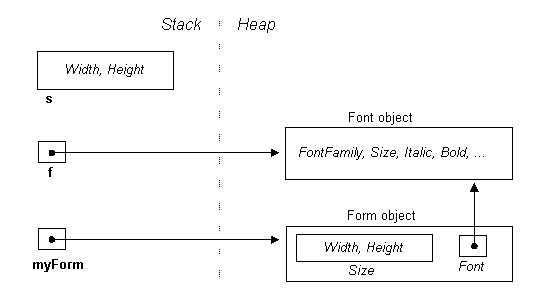

|
|
|

C# Concepts: Value vs Reference TypesJoseph Albahari IntroductionOne area likely to cause confusion for those coming from a Java or VB6 background is the distinction between value types and reference types in C#. In particular, C# provides two types—class and struct, which are almost the same except that one is a reference type while the other is a value type. This article explores their essential differences, and the practical implications when programming in C#. This article assumes you have a basic knowledge of C#, and are able to define classes and properties. First, What Are Structs?Put simply, structs are cut-down classes. Imagine classes that don’t support inheritance or finalizers, and you have the cut-down version: the struct. Structs are defined in the same way as classes (except with the struct keyword), and apart from the limitations just described, structs can have the same rich members, including fields, methods, properties and operators. Here’s a simple struct declaration: struct
Point public Point (int
x, int y) // constructor public int X // property public int Y Value and Reference TypesThere is another difference between structs and classes, and this is also the most important to understand. Structs are value types, while classes are reference types, and the runtime deals with the two in different ways. When a value-type instance is created, a single space in memory is allocated to store the value. Primitive types such as int, float, bool and char are also value types, and work in the same way. When the runtime deals with a value type, it's dealing directly with its underlying data and this can be very efficient, particularly with primitive types. With reference types, however, an object is created in memory, and then handled through a separate reference—rather like a pointer. Suppose Point is a struct, and Form is a class. We can instantiate each as follows: Point p1 = new
Point(); // Point is a *struct* In the first case, one space in memory is allocated for p1, wheras in the second case, two spaces are allocated: one for a Form object and another for its reference (f1). It's clearer when we go about it the long way: Form f1; // Allocate the reference If we copy the objects to new variables: Point p2 = p1; p2, being a struct, becomes an independent copy of p1, with its own separate fields. But in the case of f2, all we’ve copied is a reference, with the result that both f1 and f2 point to the same object. This is of particular interest when passing parameters to methods. In C#, parameters are (by default) passed by value, meaning that they are implicitly copied when passed to the method. For value-type parameters, this means physically copying the instance (in the same way p2 was copied), while for reference-types it means copying a reference (in the same way f2 was copied). Here is an example: Point myPoint = new Point (0, 0); // a new
value-type variable Test (myPoint, myForm); //
Test is a method defined below void Test (Point p, Form f) { Assigning null to f has no effect because f is a copy of a reference, and we’ve only erased the copy. We can change the way parameters are marshalled with the ref modifier. When passing by “reference”, the method interacts directly with the caller’s arguments. In the example below, you can think of the parameters p and f being replaced by myPoint and myForm: Point myPoint = new
Point (0, 0); // a new value-type variable Test (ref
myPoint, ref myForm); // pass myPoint and myForm by
reference void Test (ref Point p, ref Form f) { In this case, assigning null to f also makes myForm null, because this time we’re dealing with the original reference variable and not a copy of it. Memory AllocationThe Common Language Runtime allocates memory for objects in two places: the stack and the heap. The stack is a simple first-in last-out memory structure, and is highly efficient. When a method is invoked, the CLR bookmarks the top of the stack. The method then pushes data onto the stack as it executes. When the method completes, the CLR just resets the stack to its previous bookmark—“popping” all the method’s memory allocations is one simple operation! In contrast, the heap can be pictured as a random jumble of objects. Its advantage is that it allows objects to be allocated or deallocated in a random order. As we’ll see later, the heap requires the overhead of a memory manager and garbage collector to keep things in order. To illustrate how the stack and heap are used, consider the following method: void CreateNewTextBox() In this method, we create a local variable that references an object. The local variable is stored on the stack, while the object itself is stored on the heap:  The stack is always used to store the following two things:
The following data is stored on the heap:
Memory DisposalOnce CreateNewTextBox has finished running, its local stack-allocated variable, myTextBox, will disappear from scope and be “popped” off the stack. However, what will happen to the now-orphaned object on the heap to which it was pointing? The answer is that we can ignore it—the Common Language Runtime’s garbage collector will catch up with it some time later and automatically deallocate it from the heap. The garbage collector will know to delete it, because the object has no valid referee (one whose chain of reference originates back to a stack-allocated object).[1] C++ programmers may be a bit uncomfortable with this and may want to delete the object anyway (just to be sure!) but in fact there is no way to delete the object explicitly. We have to rely on the CLR for memory disposal—and indeed, the whole .NET framework does just that! However there is a caveat on automatic destruction. Objects that have allocated resources other than memory (in particular “handles”, such as Windows handles, file handles and SQL handles) need to be told explicitly to release those resources when the object is no longer required. This includes all Windows controls, since they all own Windows handles! You might ask, why not put the code to release those resources in the object’s finalizer? (A finalizer is a method that the CLR runs just prior to an object’s destruction). The main reason is that the garbage collector is concerned with memory issues and not resource issues. So on a PC with a few gigabytes of free memory, the garbage collector may wait an hour or two before even getting out of bed! So how do we get our textbox to release that Windows handle and disappear off the screen when we’re done with it? Well, first, our example was pretty artificial. In reality, we would have put the textbox control on a form in order to make it visible it in the first place. Assuming myForm was created earlier on, and is still in scope, this is what we’d typically do: myForm.Controls.Add (myTextBox); As well as making the control visible, this would also give it another referee (myForm.Controls). This means that when the local reference variable myTextBox drops out of scope, there’s no danger of the textbox becoming eligible for garbage collection. The other effect of adding it to the Controls collection is that the .NET framework will deterministically call a method called Dispose on all of its members the instant they’re no longer needed. And in this Dispose method, the control can release its Windows handle, as well as dropping the textbox off the screen. All classes that
implement IDisposable (including
all Windows Forms controls) have a Dispose
method. This method must be called
when an object is no longer needed in order to release resources other than
memory. There are two ways this
happens: The same thing applies to classes such as FileStream—these need to be disposed too. Fortunately, C# provides a shortcut for calling Dispose on such objects, in a robust fashion: the using statement: using (Stream s = File.Create ("myfile.txt")) { ... } This translates to the following code: Stream s = File.Create ("myfile.txt"); try { ... } finally { if (s != null) s.Dispose(); } The finally block ensurse that Dispose still gets executed should an exception be thrown within the main code block. What about in WPF? Most of the elements in WPF don’t wrap unmanaged handles requiring explicit disposal. So you can mostly ignore the disposal with WPF! A Windows Forms ExampleLet's look a couple more types you’ll come across often in Windows Forms applications. Size is a type used for representing a 2-dimensional extent and Font, as you would expect, encapsulates a font and its properties. You can find them in the .NET framework, in the System.Drawing namespace. The Size type is a struct—rather like Point, while the Font type is a class. We'll create an object of each type: Size s = new
Size (100, 100); // struct = value type  and we’ll also create a form. Form is a class in System.Windows.Forms namespace, and is hence a reference type: Form myForm = new Form(); To set the form's size and font, we can assign the objects s and f to the form via its properties: myForm.Size = s; Don't get confused by the double usage of the identifiers Size and Font: now they are referring to members of myForm and not the Size and Font classes. This double usage is acceptable in C# and is applied extensively throughout the .NET framework. Here's what it now looks like in memory:  As you can see, with s, we've copied over its contents, while in the case of f, we've copied over its reference (resulting in two pointers in memory to the same Font object). This means that changes made via s will not affect the form, while changes made via f, will[2]. In-Line Allocation Previously we said that for value-typed local variables, memory is allocated on the stack. So does that mean the newly copied Size struct is also allocated on the stack? The answer is no, because it’s not a local variable! Instead, it’s stored in a field of another object (in this case a form) that’s allocated on the heap. Therefore, it must, too, be allocated on the heap. This mode of storage is called "in-line". Fun with StructsWe've made a slightly simplifying assumption in the diagrams in that Size and Font are depicted as fields in the Form class. More accurately, they are properties, which are facades for internal representations we don’t get to see. We can imagine their definitions look something like this: class
Form Size
size; // Public property definitions public
Size Size public Font Font By using properties, the class has an opportunity to fire events when the form’s size or font changes. It provides further flexibility in that other size-related properties, such as ClientSize (the size of a control’s internal area without title bar, borders, or scroll bars) can work in tandem with the same private fields. But there is a snag. Suppose we want to double the form’s height, through one of its properties. It would seem reasonable to do this : myForm.ClientSize.Height = myForm.ClientSize.Height * 2; or more simply: myForm.ClientSize.Height *= 2; However, this generates a compiler error: Cannot
modify the return value of 'System.Windows.Forms.Form.ClientSize' because it
is not a variable We get the same problem whether we use Size or ClientSize. Let’s look at why. Imagine ClientSize as a public field rather than a property. The expression myForm.ClientSize.Height would then simply reach through the membership hierarchy in a single step and access the Height member as expected. But since ClientSize is a property, myForm.ClientSize is first evaluated (using the property’s get method), returning an object of type Size. And because Size is a struct (and hence a value-type) what we get back is a copy of the form’s size. And it’s this copy whose size we double! C# realizes our mistake, and generates an error rather than compiling something that it knows won’t work. (Had Size been defined instead as a class, there would have been no problem, since ClientSize’s get accessor would have returned a reference, giving us access to the form’s real Size object.) So how then do we change the form’s size? You have to assign it a whole new object: myForm.ClientSize = new Size There’s more good news in that with most controls we usually size them via their external measurements (Size rather than ClientSize) and for these we also have ordinary integer Width and Height properties that we can get and set! You might wonder if they could they have saved all this bother by defining Size as a class rather than a struct. But if Size was a class, its Height and Width properties would probably have been made read-only to avoid the complication of having to raise events whenever their values changed (so that the control can know to resize itself). And as read-only properties, you would be forced to go about changing them by creating a new object—so we’d be back to square one!
|